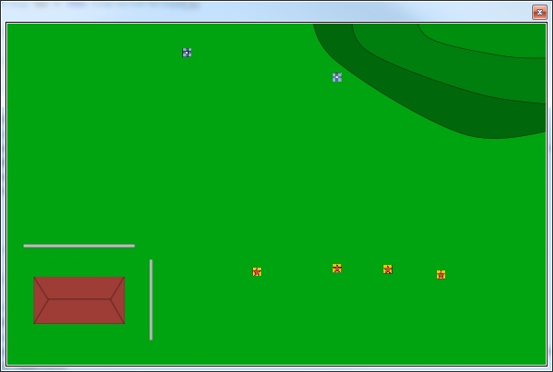
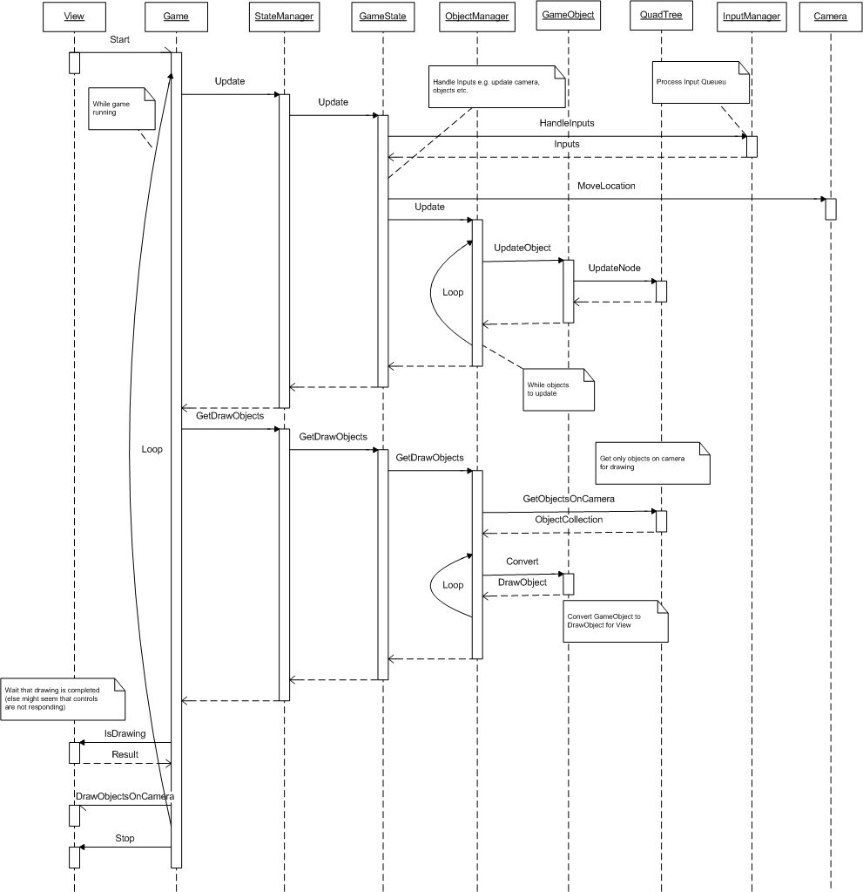

Unnamed strategy game
Source: GitHub
A coward never climbs to Mount Fuji. A fool climbs it more than once.
-- A well-known Japanese saying
This project was about learning game architecture, so tried to do everything myself from the beginning.
Update after few months: Have to admit that making working physics takes too much time, so have to find so ready made solution.
Update: This project is now on break (indifinitely). Next step is concurrency.
Style: medieval / fantasy boardgame look with pretty simple rules (like Warhammer etc.).
Game is in real-time and user can stop time to give commands to units.
UI is separated from Game Engine, so engine works with WinForms and XNA (XNA.Game replaces Game-class).
Getting good tips from Replica Island's architecture. Google I/O 2009: Writing Real Time Games For Android.

Full view of map
GameState Update sequence at the moment:

Notes:
UI
- User Interface
Game
- Main loop
StateManager
- Keep track in what state game is
State
- Game bahaviour logic
- Decide what to do when updating and with inputs
Init
- Load all objects
GameState
- Game is running
Pause
- User can view map and give commands to GameObjects (kind of a command state).
- Move- and FightComponents are not called, so game is running but any movement or fighting is not happening.
End
- Show statistics
InputManager
- Handle Input Queue
- Execute InputActions
InputAction
- Move Camera, Zoom, Select etc.
- DoAction does all the action
ObjectManager
- Creates and handles all GameObjects
QuadTree
- Keeps track of object locations
GameObject
- Objects you can see in the UI
- Includes blocking objects, like houses, walls and trees.
- Can be loaded with functionality using Components
- Objects are not is-a, but has-a
MovementComponent
AttackComponent
BehaviorComponent
- What will AI character do
Item
- Objects Characters can use (weapons, armor etc.)
CameraSystem
- Keeps track of coordinates of what is shown in window
GameArea
- Info of full map
----------------------------------------------------
On UserInput current state checks if input is allowed in this state and InputManager adds inputs to queues and returns those to State at Update.
User can zoom in/out camera. Game will only draw object on view (using QuadTree).
QuadTree is also used to check collisions and when calculating routes to target.